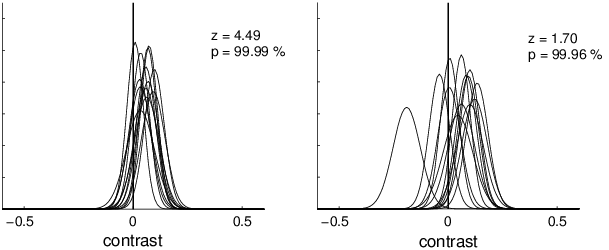

The program 'vbayes' conducts a second-level analysis of groups of subjects based on Bayesian statistics. The program takes as input parameter estimates for single subjects for a contrast of interest and its variance (output of 'vcolorglm'/'vgetcontrast' or 'vwhiteglm') and provides as output a probability map showing the probability for the contrast to be larger than zero.
The method is described in detail in Neumann and Lohmann (2003) (see below) and should be viewed as a possible alternative to 'vonesample_ttest'. However, it provides probabilities of activation for the contrast of interest rather than z- or t-values.
The Bayesian analysis is very robust against outliers, which in the traditional fixed- and random-effects models (!) have a large influence on the statistical significance of the results (see Figure 1). It is therefore particularly effective in the detection of cortical activation caused by small experimental contrasts.

Figure 1: The influence
of a single outlier in a group of subjects on both
traditional z-values
and Bayesian probabilities of activation.
The program 'vbayesgroup' conducts a Bayesian comparison of two groups of subjects. It takes as input the results of 'vbayes' for the two groups. Output is a probability map showing the probability for the contrast to be larger in group2 than in group1:
P(contrast group1 < contrast group2).
Caution: When using 'vbayesgroup', the program 'vbayes' must be called beforehand with the parameter '-level true'.